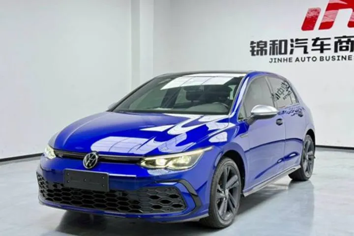

ОБЪЯВЛЕНИЕ АГЕНТСТВА
Volkswagen Golf 280TSI R-Line
Volkswagen Golf 280TSI R-Line — 2021 год, 47 000 км. Цена и наличие требуют подтверждения.



Цена по запросу
Цена из объявления на 04.02.2026. Цена и состав расходов указаны в публикации продавца. Актуальность и наличие требуют подтверждения.
- Кузов
- Хэтчбек
- Год
- 2021 год
- Пробег
- 47 000 км
- Двигатель
- Уточняйте по объявлению
- Статус
- Продан по каналу · 06.02.2026
Данные перенесены из публикации агентства. Характеристики, состояние и историю необходимо проверить перед покупкой.
Данные и фотографии из публикаций агентства. Дата публикации: 04.02.2026. Старые объявления не подтверждают наличие сегодня.
Позвонить Дмитрию ↗Канал агентства ↗Открыть интерактивную карточку ↗